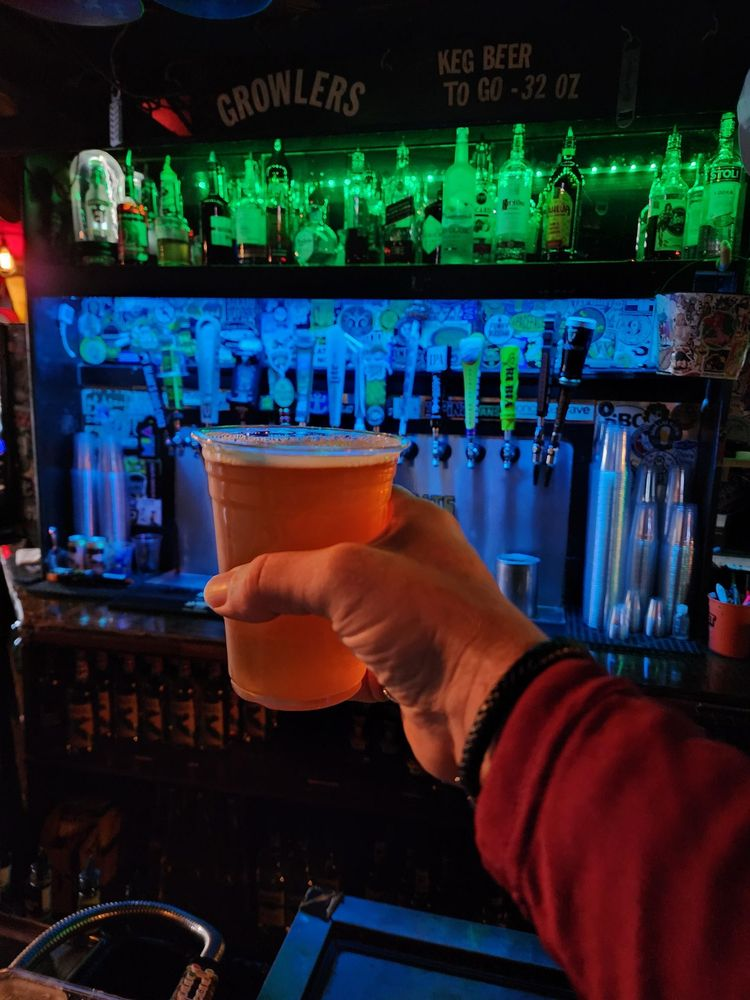

Gallery


Salt Lake City, Utah
A craft beer bar at 161 E 200 S in Salt Lake City with 140 or more draft and bottled brews, an outdoor patio, and sports screens. Food includes Bahn Mi Brat, sweet potato tots, and a garlic burger.

Beer Bar is a craft beer bar at 161 E 200 S in Salt Lake City. Research lists 140 or more draft and bottled brews, an outdoor patio, and sports screens. Food listed in research includes Bahn Mi Brat, sweet potato tots, and a garlic burger.